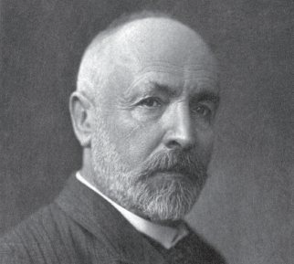
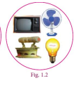
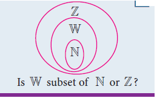

A set is a many that allows itself to thought of as a one
-Georg Cantor

Georg Cantor (AD (CE) 1845 - 1918)
The theory of sets was developed by German mathematician Georg Cantor. Today it is used in almost every branch of Mathematics. In Mathematics, sets are convenient because all mathematical structures can be regarded as sets.
Learning Outcomes
In our daily life, we often deal with collection of objects like books, stamps, coins, etc. Set language is a mathematical way of representing a collection of objects. Let us look at the following pictures. What do they represent? Here, Fig 1.1 represents a collection of fruits and Fig. 1.2 represents a collection of house-hold items.
We observe in these cases, our attention turns from one individual object to a collection of objects based on their characteristics. Any such collection is called a set.

A set is a well-defi ned collection of objects.
Here “well-defined collection of objects” means that given a specific object it must be possible for us to decide whether the object is an element of the given collection or not.
The objects of a set are called its members or elements.
For example,
1. The collection of all books in a District Central Library.
2. The collection of all colours in a rainbow.
3. The collection of prime numbers.
We see that in the adjacent box, statements (1), (2), and (4) are well defi ned and therefore they are sets. Whereas (3) and (5) are not well defi ned because the words good and beautiful are difficult to agree on. I might consider a student to be good and you may not. I might consider the Jasmine is the beautiful flower, but you may not. So, we will consider only those collections to be sets where there is no such ambiguity.
Therefore (3) and (5) are not sets.
Which of the following are sets?
1. Collection of Natural numbers.
2. Collection of English alphabets.
3. Collection of good students in a class.
4. Collection of States in our country.
5. Collection of beautiful flowers in a garden.
Activity - 1 Discuss and give as many examples of collections from your daily life situations, which are sets and which are not sets.
Note
For example, the collection 1,2,3,4,5,6,7,8, … as well as the collection 1, 3, 2, 4, 5, 7, 6, 8, … are the same though listed in different order. Since it is necessary to know whether an object is an element in the set or not, we do not want to list that element many times.
Notation
A set is usually denoted by capital letters of the English Alphabets A, B, P, Q, X, Y, exatra
The elements of a set is written within curly brackets “{ }” double oppastafey empty set double oppastafey bracket "{ }"
If x is an element of a set A or x belongs to A, we write x belongs to A.
If x is not an element of a set A or x does not belongs to A, we write x not belongs A.
For example,
A is equal to set bracket of set bracket of 2,3,5,7
Consider the set A = {2,3,5,7} then
2 is an element of A; we write 2∊A 2 belongs to A
5 is an element of A; we write 5∊A 5 belongs to A
6 is not an element of A; we write 6∉A 6 does not belongs to A
Example 1.1
Consider the set A = {Ashwin, Murali Vijay, Vijay Shankar, Badrinath}.
A is equal to set bracket of Ashwin, Murali Vijay, Vijay Shankar, Badrinath.
Fill in the blanks with the appropriate symbol belongs to or not belongs to
Romen letter 1 Murali Vijay DASH DASH DASH A.
Romen letter 2 Ashwin DASH DASH DASH A.
Romen letter 3 Badrinath DASH DASH DASH A.
Romen letter 4 Ganguly DASH DASH DASH A.
Romen letter 5 Tendulkar DASH DASH DASH A
Solution
Romen letter 1 Murali Vijay belongs to A.
Romen letter 2 Ashwin belongs to A
Romen letter 3 Badrinath belongs to A
Romen letter 4 Ganguly does not belong to A.
Romen letter 5 Tendulkar does not belong to A.
The collection of odd numbers can be described in many ways:
(1) “The set of odd numbers” is a fine description, we understand it well.
(2) It can be written as {1, 3, 5, …} set bracket of 1,3,5,...
(3) Also, it can be said as the collection of all numbers x where x is an odd number.
All of them are equivalent and useful. For instance, the two descriptions “The collection of all solutions to the equation x minus 5 is equal to 3 and set bracket of 8 refer to the same set.
A set can be represented in any one of the following three ways or forms:
In descriptive form, a set is described in words.
For example,
(i) The set of all vowels in English alphabets.
(ii) The set of whole numbers.
In set builder form, all the elements are described by a rule.
For example,
Romen letter 1 A = {x : x is a vowel in English alphabets}
A is equal to set bracket of x such that x is a vowel in English alphabets
Romen letter 2 B = {x|x is a whole number} B is equal to set bracket of x such that x is a whole number
Note
The symbol ‘:’ or ‘|’ stands for “such that”.
A set can be described by listing all the elements of the set.
For example,
Example 1.2
Romen letter 1 A = {a, e, i, o, u} A is equal to set bracket of a , e , i, o, u
Romen letter 2 B = {0,1,2, 3,…} B is equal to set bracket of 0, 1, 2, 3,
Can this form of representation be possible always?
Note
Three dots (…) in the example (ii) is called ellipsis. It indicates that the pattern of the listed elements continues in the same manner.
Write the following sets in respective forms.
Serial No |
Descriptive form |
Set builder form |
Roster form |
1 |
The set of all natural numbers less than 10 |
|
|
2 |
|
{x : x is a multiple of 3, x ∊ N Set bracket of x such that X is a multiple of 3, x belongs to N
|
|
3 |
|
|
{2,4,6,8,10} Set bracket of 2, 4, 6, 8, 10
|
4 .The set of all days in a week |
|
|
|
5 |
|
|
{…-3,-2,-1,0,1,2,3…} Set bracket of ...minus 3, minus 2, minus 1, 0, 1, 2, 3...} |
Example 1.2
Write the set of letters of the following words in Roster form
Solution
1. ASSESSMENT
X= {A, S, E, M, N, T} X is equal to set bracket of A, S, E, M, N, T
2. PRINCIPAL
Y={P, R, I, N, C, A, L} Y is equal to set bracket of P, R, I, N, C, A, L
Exercise 1.1
1. Which of the following are sets?
Romen letter 1 The collection of prime numbers up to 100.
Romen letter 2 The collection of rich people in India
Romen letter 3 The collection of all rivers in India.
Romen letter 4 The collection of good Hockey players.
2. List the set of letters of the following words in Roster form.
Romen letter 1 INDIA
Romen letter 2 PARALLELOGRAM
Romen letter 3 MISSISSIPPI
Romen letter 4 CZECHOSLOVAKIA
3. Consider the following sets A = {0, 3, 5, 8}, B = {2, 4, 6, 10} and C = {12, 14,18, 20}. A is equal to set bracket of 0,3,5, 8 B is equal to set bracket of 2, 4, 6, 10 and C is equal to set bracket of 12, 14,18, 20)
(a) State whether True or False:
Romen letter 1 18 ∊ C 18 belongs to c
Romen letter 2 16 ∉A 6 not belongs to A
Romen letter 3 14 ∉C 14 not belongs to C
Romen letter 4 10 ∊B 10 belongs to B
Romen letter 5 5∊B 5 belongs to B
Romen letter 6 0 ∊B 10 0 belongs to B 10
(b) Fill in the blanks:
Romen letter 1 3 ∊ belongs to DASH 3
Romen letter 2 14 ∊ belongs to DASH 14
Romen letter 3 18 DASH belongs to B
Romen letter 4 4 DASH belongs to B
4. Represent the following sets in Roster form.
Romen letter 1 A is equal to the set of all even natural numbers less than 20.
Romen letter 2 B is equal to set bracket of y such that y is equal to 1 by 2n, n belongs to N, n less than or equal to 5}
{y: y = 1/2n , n ∊ N, n ≤ 5}
Romen letter 3 C = {x : x is perfect cube, 27 < x < 216} C is equal to set bracket of x such that x is perfect cube , 27 less than x less than 216
Romen letter 4 D = {x : x ∊ Z, –5 < x ≤ 2} ) D is equal to set bracket of x such that x belongs to Z, minus 5 lesser than x lesser than equal to 2
5. Represent the following sets in set builder form.
Romen letter 1 B is equal to the set of all Cricket players in India who scored double centuries in One Day Internationals.
Romen letter 2 C is equal to , , ,... 21 32 43 $.
Romen letter 3 D is equal to The set of all Tamil months in a year.
Romen letter 4 E is equal to The set of odd Whole numbers less than 9.
6. Represent the following sets in descriptive form.
Romen letter 1 P is equal to set bracket of January, June, July
Romen letter 2 Q is equal to set bracket of 7,11,13,17,19,23,29
Romen letter 3 R is equal to set bracket of x is equal to set bracket of x such that x belongs to N, x less than 5}x belongs to N greater than x less than 5
Romen letter 4 S = is equal to set bracket of x {x : x is a consonant in English alphabets}
Exercise 1.1 answers
2. (i) {I, N, D, A} (ii) {P, A, R, L, E, O, G, M} (iii) {M, I, S, P} (iv) {C, Z, E, H, O, S, L, V, A, K, I}
3. (a) (i) True (ii) True (iii) False (iv) True (v) False (vi) False (b) (i) A (ii) C (iii) g (iv)!
4. (i) A = {2, 4, 6, 8, 10, 12, 14, 16, 18} (ii) B = {1/2, 1/4 , 1/6 , 1/8 , 1/10 } (iii) C = {64, 125} (iv) D = { -4,-3,-2,-1, 0,1, 2}
5. (i) B = {x: x is an Indian player who scored double centuries in One Day International}
(ii) C =: { x : x= n/ n + 1, n∊N. (iii) D = {x : x is a Tamil month in a year}
6. (i) P = The set of English months starting with letter ‘J’
(ii) Q = The set of Prime numbers between 5 and 31
(iii) R = The set of natural numbers less than 5
There is a very special set of great interest: the empty collection ! Why should one care about the empty collection? Consider the set of solutions to the equation x power 2 plus 1 It has no elements at all in the set of Real Numbers. Also consider all rectangles with one angle greater than 90 degrees. There is no such rectangle and hence this describes an empty set.
So, the empty set is important, interesting and deserves a special symbol too.
A set consisting of no element is called the empty set or null set or void set.
It is denoted by ∅ or { }.
Thinking Corner
Are the sets {0} Null Set {set bracket empty} and {∅} Empty Set {∅} empty sets?
For example,
Romen letter 1 A={x : x A is equal to set bracket of x such that x is an odd integer and divisible by 2}
A={ } or ∅
Romen letter 2 The set of all integers between 1 and 2.
A set which has only one element is called a singleton set.
For example, A = {x : 3 < x < 5, x∊N } A is equal to set bracket of x: 3 less than x less than5, X and N}
Romen letter 2 The set of all even prime numbers.
A set with finite number of elements is called a finite set.
Note
An empty set has no elements, so Q is a finite set.
For example,
1. The set of family members.
2. The set of indoor/outdoor games you play.
3. The set of curricular subjects you learn in school.
4. A = {x : x is a factor of 36} A is equal to set bracket of x: such that x is 36 factor
A set which is not finite is called an infinite set.
Thinking Corner
Is the set of natural numbers a finite set?
For example,
To discuss further about the types of sets, we need to know the cardinality of sets.
Cardinal number of a set : When a set is finite, it is very useful to know how many elements it has. The number of elements in a set is called the Cardinal number of the set. The cardinal number of a set A is denoted by n(A)
Example 1.3
If A is equal to set bracket of {1,2,3,4,5,7,9,11}, find n(A). n nside bracket of A close bracket
Solution
A = {1,2,3,4,5,7,9,11}
A is equal to set bracket of 1, 2, 3, 4, 5 ,7, 9, 11
Since set A contains 8 elements, n(A) = 8. n of (A) is equal to 8.
Thinking Corner
If A = {1, b, b, {4, 2}, {x, y, z}, d, {d}}, then n(A) is DASH.
Two finite sets A and B are said to be equivalent if they contain the same number of elements. It is written as A ≈ B.
If A and B are equivalent sets, then n(A) = n(B) n of A equal to n of B
Thinking Corner
Let A={x : x A is equal to set bracket of x such that x is a colour in national flag of India} and B={Red, Blue, Green}. B is equal to set bracket of Red, Blue, Green. Are these two sets equivalent?
For example,
Consider A = { ball, bat} and B = {history, geography}.
Here A is equivalent to B because n(A) = n(B) = 2. n of A equal to n of B Equal to 2
Example 1.4
Are P = { x : –3 ≤ x ≤ 0, x } and Q = The set of all prime factors of 210, equivalent sets? P is equal to set bracket of x such that minus 3 less than or equal to x less than or equal to ≤0, x belongs to Z}
Solution
P = {–3, –2, –1, 0}, P is equal to set bracket of minus 3, minus 2, minus 1, 0 The prime factors of 210 are 2,3,5,and 7 and so, Q = {2, 3, 5, 7} Q is equal to set bracket of 2 , 3 , 5 , 7
n(P) =4 and n(Q) = 4. n of P is equal to 4 and n of (Q) is equal to 4Therefore, P and Q are equivalent sets.
Two sets are said to be equal if they contain exactly the same elements, otherwise they are said to be unequal.
In other words, two sets A and B are said to be equal, if
Romen letter 1 every element of A is also an element of B
Romen letter 2vevery element of B is also an element of A
For example,
Consider the sets A = {1, 2, 3, 4} A is equal to set bracket of 1,2,3,4and B = {4, 2, 3, 1} B is equal to set bracket of 4, 2,3,1
Since A and B contain the same elements, A and B are equal sets.
Thinking Corner
Are the sets ∅, {0}, {∅} equal or equivalent? ∅, set bracket of zero }, set bracket of null ∅}
Note
If A and B are equal sets, we write A = B. A is equal to B.
If A and B are unequal sets, we write A≠B. A not equal to B.
A set does not change, if one or more elements of the set are repeated.
For example, if we are given
A={a, b, c} A is equal to set bracket of a, b, c and B={a, a, b, b, b, c} B is equal to set bracket of a, a, b, b, b, then, we write B = { a, b, c, }. B is equal to set bracket of a, b, c Since, every element of A is also an element of B and every element of B is also an element of A, the sets A and B are equal.
Example 1.5
Are A = {x : x ! N, 4 ≤ x ≤ 8} A is equal to set bracket of x is equal to x term N, 4less than x less than 8 and B = { 4, 5, 6, 7, 8} B is equal to set bracket of 4,5,6,7, 8 equal sets?
Solution
A = { 4, 5, 6, 7, 8},
B = { 4, 5, 6, 7, 8}
A is equal to set bracket of 4, 5 , 6, 7, 8,
B is equal to set bracket of 4, 5 , 6, 7, 8
A and B are equal sets.
Note
Equal sets are equivalent sets, but equivalent sets need not be equal sets. For example, if A = { p,q,r,s,t} and B= { 4,5,6,7,8}. Here n(A)=n(B), so A and B are equivalent but not equal.
A Universal set is a set which contains all the elements of all the sets under consideration and is usually denoted by U.
For example,
Romen letter 1 If we discuss about elements in Natural numbers, then the universal set U is the set of all Natural numbers. U={x : x ∈}. U is equal to set bracket of x such that x belongs to N .
Romen letter 2 If A is equal to set bracket of earth, mars, Jupiter, then the universal set U is the planets of solar system.
Let A and B be two sets. If every element of A is also an element of B, then A is called a subset of B. We write A⊆B. A subset of B
Thinking Corner

A ⊆ B is read as “A is a subset of B”
Thus A ⊆ B, if a ∊A implies a ∊ B.
If A is not a subset of B, we write A M B
Clearly, if A is a subset of B, then n(A) ≤ n(B).
Since every element of A is also an element of B, the set B must have at least as many elements as A, thus n(A) ≤ n(B).
The other way is also true. Suppose that n(A) > n(B), then A has more elements than B, and hence there is at least one element in A that cannot be in B, so A is not a subset of B.
For example,
1 ⊆{1,2,3} (ii) {2,4} ∉{1,2,3} set bracket of [1] subset of {set bracket of 1,2,3}
2 set bracket of 2,4 not a subset of set bracket of 1,2,3}
Example 1.6
Insert the appropriate symbol ⊆or ⊆ in each blank to make a true M statement.
Romen letter 1 {10, 20, 30} DASH {10, 20, 30, 40} set bracket of 10, 20, 30) dash _ set bracket of 10, 20, 30, 40
Romen letter 2 { p, q, r} DASH {w, x, y, z}
set bracket of p, q, r dash set bracket of w, x, y, z
Solution
Romen letter {10, 20, 30} DASH {10, 20, 30, 40}
Since every element of {10, 20, 30} is also an element of {10, 20, 30, 40}, we get {10, 20, 30} ⊆ {10, 20, 30, 40}.
Romen letter {p, q, r} DASH {w, x, y, z}
Since the element p belongs to {p, q, r} but does not belong to {w, x, y, z}, shows that {p, q, r} ⊆ {w, x, y, z}.
Activity-3
Discuss with your friends and give examples of subsets of sets from your daily life situation.
Example 1.7
Write all the subsets of A is equal to set bracket of a, b.
Solution
A= {a,b} A is equal to set bracket of a, b
Subsets of A are empty set , set bracket of a, set bracket of b , set bracket of a, comma b) .
∅,{a}, {b} and {a, b}.
Note
If A⊆B and B⊆A, then A=B.
A subset of B and B subset of A then A is equal to B
In fact, this is how we defined equality of sets. Empty set is a subset of every set.
This is not easy to see ! Let A be any set. The only way for the empty set to be not a subset of A would be to have an element x in it but with x not in A. But how can x be in the empty set ? That is impossible. So, this only way being impossible, the empty set must be a subset of A. (Is your head spinning? Think calmly, explain it to a friend, and you will agree it is alright !)
Every set is a subset of itself. (Try and argue why?)